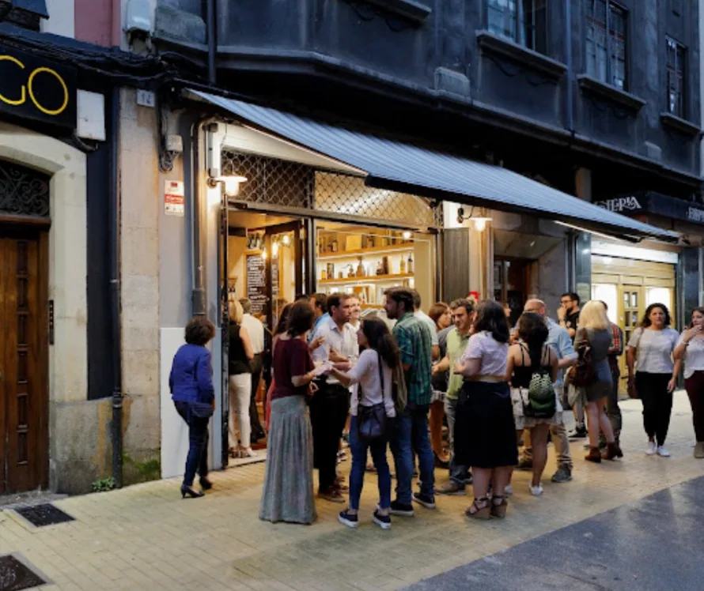
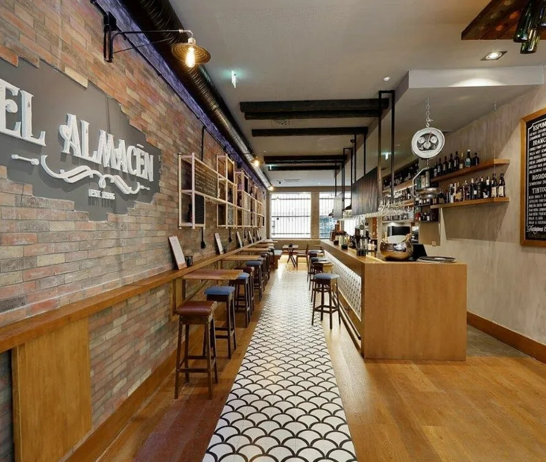
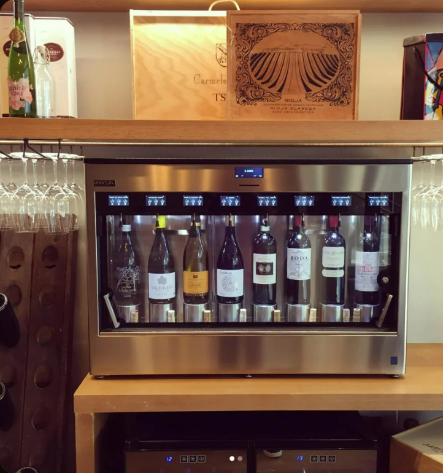
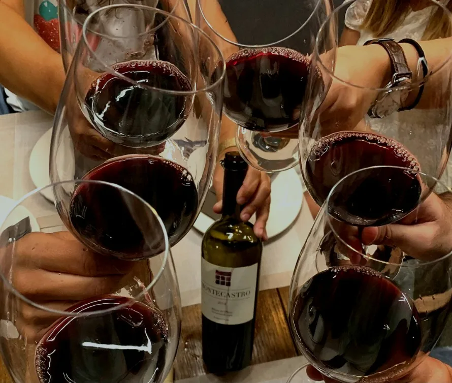
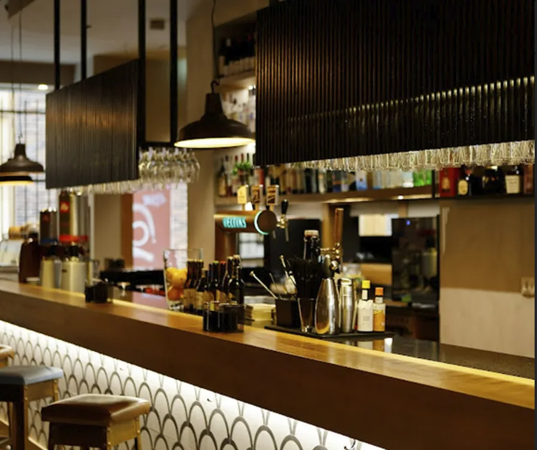
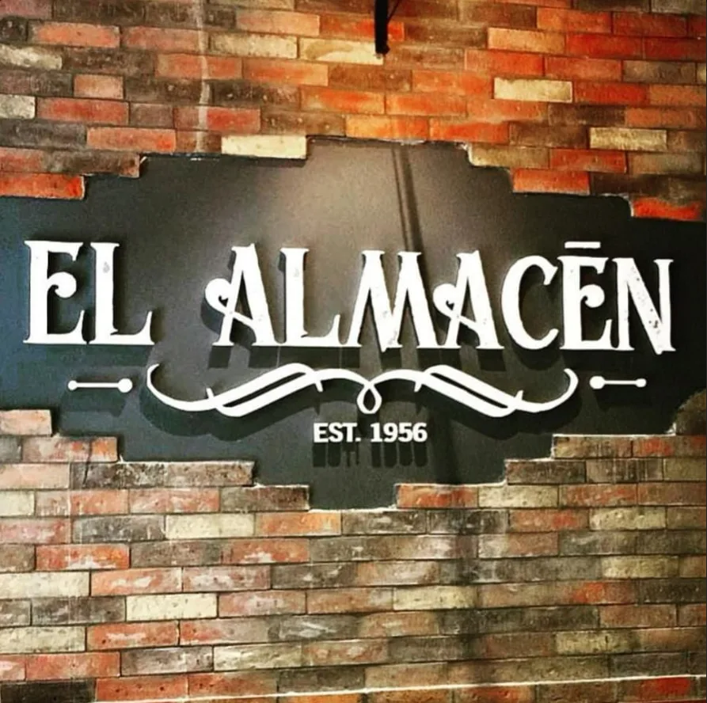
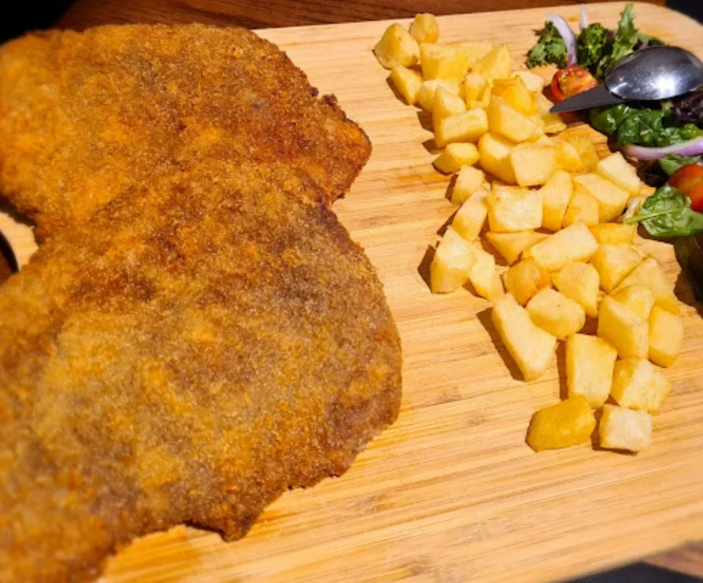
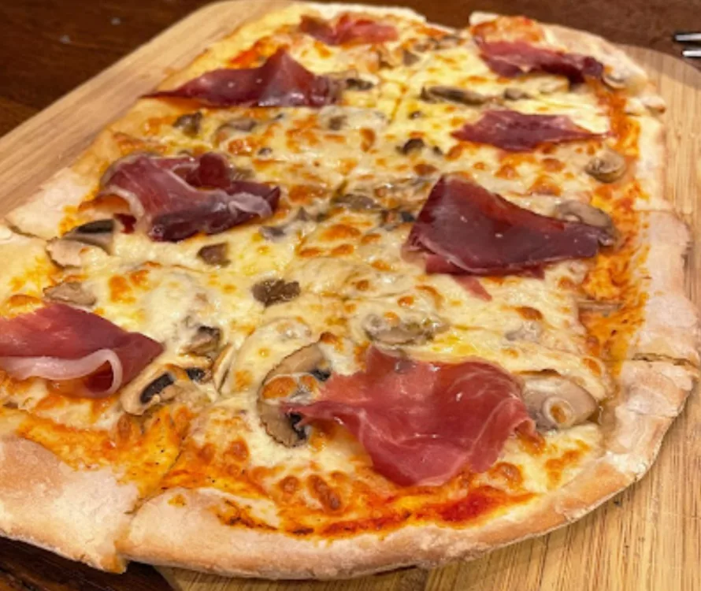
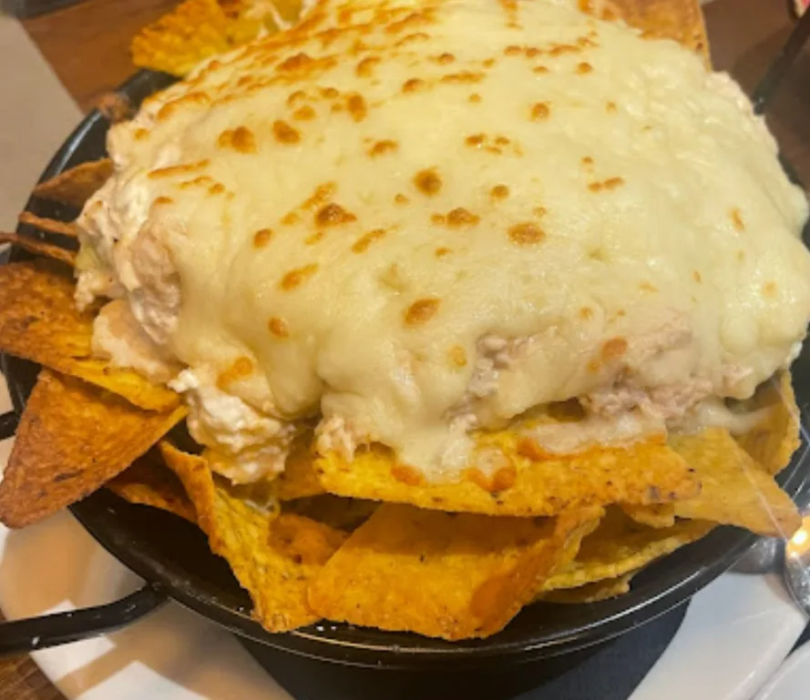

Desde 1956,
el lugar de siempre.
Vinos de pequeños productores, cervezas naturales, destilados de todo el mundo y cocina como la de casa. En el corazón de Gijón, en Calle Begoña, desde hace casi 70 años.

Casi 70 años en el corazón de Gijón.
El Almacén abrió en 1956 y desde entonces se ha convertido en uno de los bares con más carácter del centro de Gijón.
Ladrillo visto, madera y una barra donde siempre hay algo interesante que descubrir. Un sitio que no sigue modas porque no las necesita: la gente vuelve por el producto, por la atención y por ese ambiente que no se fabrica, se construye con los años.
Vinos de pequeños productores que no encuentras en todos lados, cervezas naturales, destilados seleccionados de todo el mundo y una cocina directa y sin trampa.
Casi 5 estrellas, sin pedirlas.
Cientos de clientes nos puntúan en Google. Estas son algunas opiniones reales.
"Comida excelente. Hemos ido en dos ocasiones... Magnífica comida y buen ambiente y simpatía."
"Relación precio calidad perfecta. Tapeo rico y sin complicaciones de autor... Están en la mejor ubicación de la calle Begoña. Vinos a tono."
"Fue una sorpresa lo bien que comimos y lo bien que nos atendieron, y el revoltillo de centollo y gambas fue espectacular, igual que los callos."

Vinos de pequeños productores.
En El Almacén no encontrarás las mismas botellas de siempre. Nuestra selección apuesta por bodegas independientes, productores artesanales y vinos con historia propia que merecen que les presentes.
Blancos, tintos, naturales, de guarda o para tomar ahora. Una carta que cambia con la temporada y que siempre tiene algo que no conocías.
Lo que encontrarás
Una propuesta honesta y con criterio. Producto seleccionado, nada de atajos.
Vinos artesanales
Selección de vinos de bodegas independientes y pequeños productores que no encontrarás en cualquier bar.
Cervezas naturales
Cervezas artesanales y naturales con rotación de referencias para que siempre haya algo nuevo que probar.
Destilados del mundo
Una barra con destilados de todo el mundo: whiskies, rones, ginebras, mezcales y muchos más.
Cocina casera
Platos directos y sin trampa. Cachopo asturiano, pizzas, nachos y todo lo que hace falta para acompañar una buena copa.
Galería
El ambiente, la barra y lo que sale de la cocina.






Preguntas frecuentes
¿Dónde estáis?
En Calle Begoña, 12, en el centro de Gijón, Asturias (CP 33201). A un paso de todo.
¿Cómo puedo contactar?
Llámanos al 984 182 575 o escríbenos por Instagram @elalmacengijon.
¿Qué tipo de vinos tenéis?
Selección de vinos de pequeños productores y bodegas independientes. La carta rota con las temporadas para tener siempre algo nuevo que descubrir.
¿Tenéis comida?
Sí, cocina casera y directa: cachopo asturiano, pizzas, nachos y más. Comida para acompañar la bebida, sin complicaciones.
¿Cuál es vuestro horario?
Jueves, martes y miércoles: 12:30–16:00 y 18:30–23:30. Viernes y sábado: 12:30–2:00. Domingo: 12:30–16:00. Lunes: cerrado.
¿Facilitáis información sobre alérgenos?
Sí. Conforme al Reglamento UE 1169/2011 podemos informarte sobre los alérgenos de cada plato. Consúltanos directamente en el local o por teléfono.